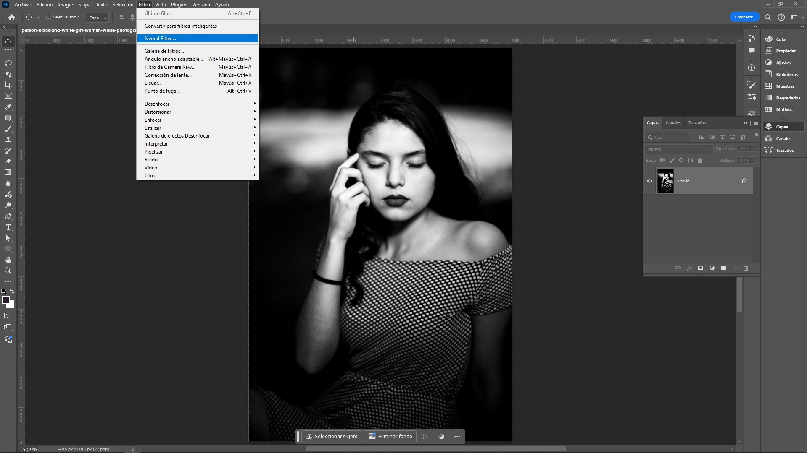

Filtros Neurales
Los filtros neurales en Photoshop son una herramienta que permite aplicar efectos avanzados de inteligencia artificial (IA) a las imágenes de manera sencilla. Estos filtros utilizan redes neuronales para realizar tareas complejas de edición de fotos que antes requerían mucho tiempo o conocimientos técnicos avanzados. Algunos de los filtros más destacados incluyen:
- Retrato inteligente: Modifica características faciales como la edad, expresión, dirección de la mirada, etc., sin necesidad de realizar una edición manual minuciosa.
- Transferencia de estilo: Permite aplicar el estilo artístico de una imagen a otra, similar a lo que haría un pintor al replicar un estilo particular en una obra.
- Restauración de fotos: Mejora imágenes antiguas o dañadas, eliminando arrugas, manchas, y restaurando detalles perdidos.
- Sustitución del cielo: Este filtro cambia el cielo en una imagen por otro distinto de forma automática, ajustando la iluminación de la imagen para que coincida con el nuevo cielo.
- Suavizado de piel: Aplica un suavizado inteligente a la piel, eliminando imperfecciones de manera natural sin perder detalles importantes.
- Profundidad de campo: Crea un efecto de desenfoque de fondo similar al que se obtiene con lentes de cámara de alta calidad, simulando una mayor o menor profundidad de campo.
Estos filtros pueden ajustarse según las necesidades del usuario, y están diseñados para facilitar el flujo de trabajo creativo con resultados de alta calidad en poco tiempo.
Filtros Neurales
Para trabajar con los filtros neurales en Photoshop, se pueden seguir los siguientes pasos:
- Abrir una imagen: Primero, se debe abrir la imagen sobre la que se desea aplicar un filtro neural.
- Acceder a los Filtros Neurales: Ir a la barra de menú superior y seleccionar: Filtro > Filtros Neurales >. Esto abrirá una ventana emergente donde se encuentran los filtros disponibles.
- Descargar los Filtros (si es necesario): Algunos filtros neurales pueden no estar instalados por defecto. Si aparece un ícono de nube al lado del filtro, se debe hacer clic en él para descargarlo e instalarlo antes de usarlo.
- Seleccionar un Filtro: Seleccionar el filtro deseado haciendo clic en su casilla de verificación, en este caso el filtro colorizer para convertir de B/N a Color.
- Ajustar los Parámetros: Una vez seleccionado el filtro, se pueden ajustar sus parámetros mediante controles deslizantes. Cada filtro ofrece diferentes opciones de ajuste, como la intensidad, la dirección o la escala de los efectos.
- Vista previa en tiempo real: Photoshop permite ver cómo los cambios afectarán a la imagen en tiempo real mientras se ajustan los parámetros del filtro.
- Aplicar el Filtro: Después de ajustar el filtro a satisfacción, se puede hacer clic en Aceptar para aplicarlo a la imagen.
- Guardar la imagen: Una vez aplicado el filtro, se puede guardar la imagen editada en el formato deseado. Si se desea mantener la imagen original intacta, es recomendable guardar la imagen nueva en una capa nueva.
Los filtros neurales continúan mejorando con cada actualización de Photoshop, lo que amplía las posibilidades creativas para los usuarios que buscan realizar ediciones de manera rápida y con un enfoque más intuitivo.